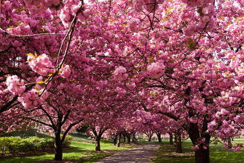

El invernadero, tu web sobre las plantas.
Todo lo que tienes que saber sobre las plantas.
Bienvenido a mi web, una web creada por y para los amantes de las plantas, aquí vamos a poder encontrar muchas formas de conocerlas, los tipos de plantas, algunos consejos para el jardín y nuestra sección sobre jardinería japonesa donde descubrirás el mundo de los bonsais, prebonsais y todo hacerca de estas maravillosas miniaturas.
No dudes en ponerte en contacto conmigo si tienes alguna duda al respecto, utiliza la sección de "contacto" y te responderé lo más brevemente posible.